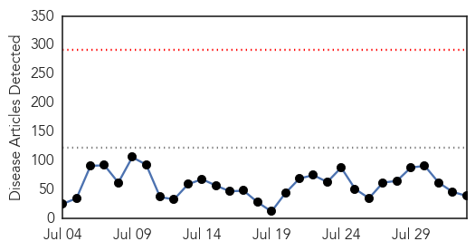
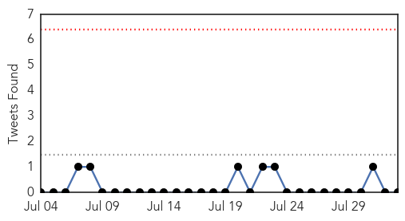
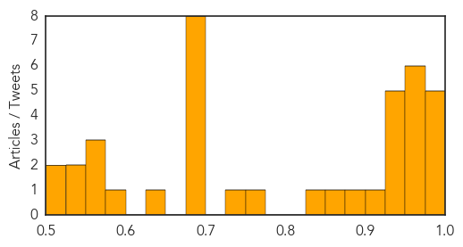

Unknown
30-Day Web Trend
0 alerts, 0 warnings

30-Day Twitter Trend
0 alerts, 0 warnings

Article Locations

Article Confidences
Top Articles:
- 0.993
- S. Korea's MERS cases, fatalities remain flat
- 0.993
- Four dead, 65 sick in New York City Legionnaires' disease outbreak
- 0.991
- 4 dead, 65 infected, New York City on alert — RT USA
- 0.988
- VIRUS IN NYC Death toll rises to 4 in Legionnaires’ outbreak
- 0.985
- 4th person dies from Legionnaires disease in NYC as official expects more cases
- 0.972
- Outbreak of Legionnaires Disease Kills Four
- 0.970
- Legionnaires Outbreak Kills Four In New York
- 0.966
- New York residents anxious after 4th death from Legionnaires’ disease
- 0.966
- New York residents anxious after deaths from Legionnaires’ disease
- 0.961
- New York's Bronx hit by Legionnaires outbreak
- 0.957
- Marler Clark Hired in Washington Salmonella Outbreak
- 0.948
- NYC health official expects more Legionnaires' disease cases
- 0.943
- Congo virus: Government directs hospitals to set up isolation wards
- 0.941
- Salmonella outbreak that may be tied to pork grows
- 0.941
- 4 dead, 65 sickened in Bronx by Legionella
- 0.940
- Fourth person dies from Legionnaires' disease in New York
- 0.917
- Chicago Tribune
- 0.876
- Kentucky hospital emergency room placed on lockdown
- 0.858
- Do Medicos Really Need to Wear White Coats and Stethoscopes in Public?
- 0.833
- Legionnaires' death toll climbs with 4 dead in NYC
- 0.765
- Emergency declared at govt hospitals in rain, flood hit areas
- 0.730
- Four Legionnaires' Disease Deaths In The Bronx
- 0.688
- War and virus spook tourists- Nepali Times
- 0.677
- Vice President Biden ‘actively exploring’ presidential bid
- 0.677
- UN peacekeeper killed in clashes in Central African Republic
- 0.677
- Deadly suicide blast targets Turkish soldiers
- 0.677
- Saudi king cuts short French holiday amid beach closure row
- 0.677
- In pictures: Calais migrant crisis sparks rival protests at UK port town
- 0.677
- Kerry visits Middle East to calm Iran nuclear deal fears
- 0.677
- Burundi presidential aide killed in drive-by shooting
- 0.627
- Know Your Status Kentuckiana, Test Yourself for HIV
- 0.593
- Floods Wreak Havoc; Rajnath Promises Aid
- 0.574
- Study casts new doubts on HPV vaccine -- Health & Wellness -- Sott.net
- 0.562
- Roasted Whole Pigs Suspected to have Caused Salmonella Outbreak in Washington
- 0.558
- Indian monsoon kills more than 100 and forces hundreds of thousands out of homes
- 0.548
- Doctor Says Spike In ‘Rabbit Fever’ Cases Should ‘Be A Concern’ For The Public « CBS Denver
- 0.535
- Insured but sent to public health
- 0.506
- UN: Burma Flood Death Toll To Rise
- 0.506
- Special Report- A k!ller On The Loose: Deadly Superbug
Top Tweets:
-
No tweets found for Aug 02, 2015